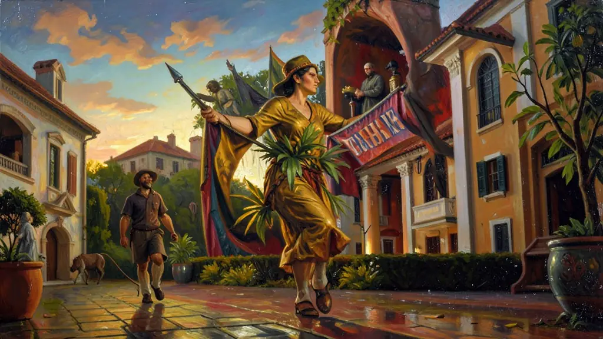
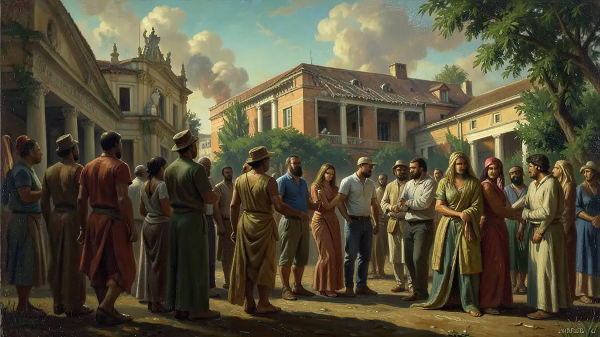
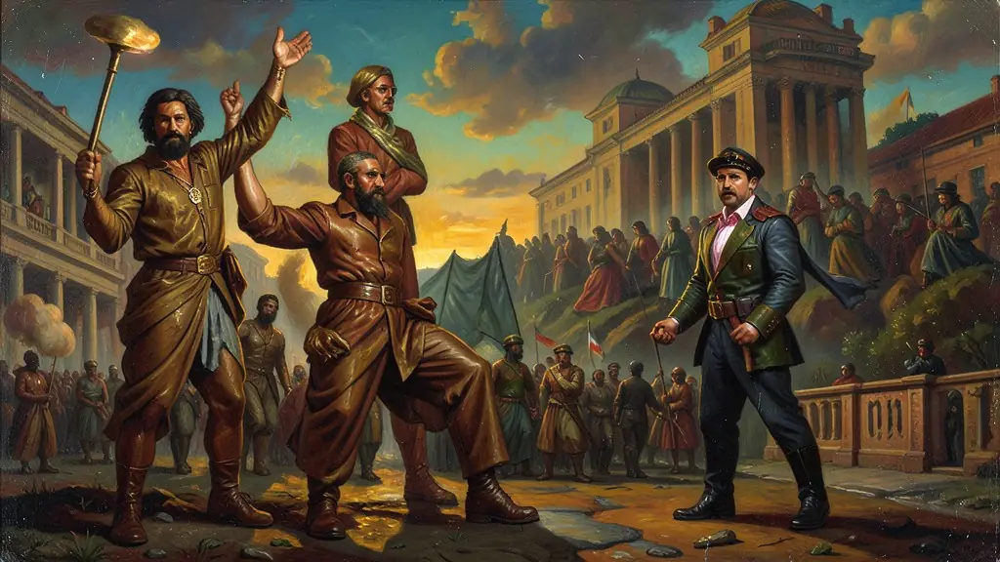

Capítulo 01
1. 1º de Maio: O Espetáculo do Trabalho
No estádio de São Januário, no Rio de Janeiro, Vargas celebrava o dia do trabalho com transmissões de rádio para todo o país. Ele não escondia seu título: 'Pai dos Pobres'. Seus discursos eram diretos: 'Trabalhadores do Brasil!'. Ali, ele assinava decretos e anunciava aumentos de salário sob aplausos ensurdecedores de operários que viam, pela primeira vez, um presidente que falava a língua das fábricas, e não apenas dos salões aristocráticos.

Capítulo 02
2. Carteira de Trabalho: O Selo da Cidadania
Ter a carteira assinada era a prova de que você era um homem 'de bem'. O documento não servia apenas para o emprego; servia para conseguir crédito, moradia e evitar a prisão por 'vadiagem'. Getúlio criou um sistema onde o trabalhador se sentia protegido pelo 'Doutor Getúlio', gerando uma lealdade emocional que duraria décadas após a sua morte. O operário brasileiro agora tinha um rosto e um número no registro do Estado.

Capítulo 03
3. Corporativismo e Sindicatos de Estado
Para Vargas, a luta de classes era um veneno. Para eliminá-la, ele criou o modelo corporativista: o operário e o patrão deveriam colaborar sob a supervisão do Estado. Os sindicatos autônomos e combativos foram fechados e substituídos pelos sindicatos oficiais. Quem não estivesse no sindicato do governo, não recebia os benefícios da CLT. O Estado era o juiz, o júri e o carrasco econômico da nação.

Capítulo 04
4. Estabilidade e Justiça do Trabalho
A CLT criou o tribunal para julgar as causas entre capital e trabalho. Antes, o patrão mandava e o operário obedecia em silêncio. Com a Justiça do Trabalho, milhões de processos começaram a andar, forçando os empresários a respeitarem a lei escrita. Getúlio equilibrava: satisfazia o povo com direitos e garantia ao empresário a ordem no chão da fábrica, impedindo o avanço do socialismo soviético no Brasil.
Capítulo 05
5. O Legado Político: O Trabalhismo
O trabalhismo não morreu em 1945. Ele sobreviveu como ideologia no PTB (Partido Trabalhista Brasileiro). Jango e Brizola foram os herdeiros dessa política. Mesmo após a redemocratização e a Ditadura Militar, o trabalhador brasileiro continua olhando para a CLT como o seu maior patrimônio histórico. Getúlio plantou a ideia de que o Estado é o responsável pela felicidade econômica do povo, uma ideia que ainda vive no fundo da alma política brasileira.
A Consolidação das Leis do Trabalho (CLT), promulgada em 1943 sob o apogeu autoritário do Estado Novo, representou a peça angular do edifício varguista na formulação do pacto capital-trabalho no Brasil. Fundamentalmente embasada pela inspiração do corporativismo da 'Carta del Lavoro' fascista musoliniana a outorga estatista enredava os operários à concessão burocrática inafastável de submissão tutelada pelo Estado.
A historiadora Angela de Castro Gomes denomina esse complexo arcabouço social como 'a invenção do trabalhismo'. Ao ceder historicamente reivindicações clamadas – desde há muito lutadas (mas sufocadas e rotuladas de policiascas anteriormente nas greves anárquicas republicanas) – Vargas transformou, politicamente de magistral maestria, o direito inalienável constitucional da luta classista convertendo magicamente em uma benesse bondosa apaziguadora outorgada sob o paternalismo da caridade ditatorial e governamental.
Em quesitos historiográficos atuais como os exigidos ao aluno o olhar essencial precisa mirar além da indubitável essencialidade dessas proteções estruturais trabalhistas asfixiando por contrapartida de modo indelével na raiz e nos laços a liberdade organizacional intrínseca de classe autônoma gerando um passivo dos sindicatos atados e 'peleguistas' subservientes nas amarras da pasta no famigerado Ministério Trabalhista e o engrandecido estado central do paternalismo varguista corporativista moderno.
Fonte: GOMES, Angela de Castro. A Invenção do Trabalhismo. Editora FGV, 2005.
Atividades interativas
Questões para fixar
A Consolidação das Leis do Trabalho (CLT), promulgada por Getúlio Vargas em 1943, tinha como objetivo político primordial:
O título de 'Pai dos Pobres', atribuído a Getúlio Vargas na propaganda oficial do Estado Novo, é um exemplo de: